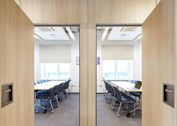
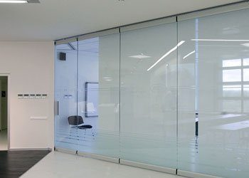
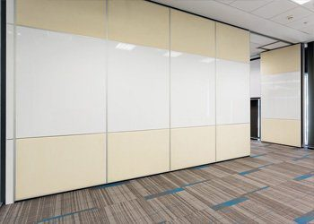
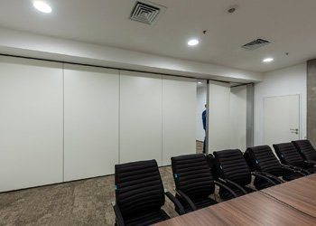
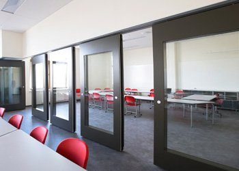
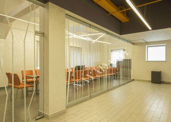

Статьи о раздвижных перегородках
Как устроены системы, что учесть при выборе и монтаже, как подобрать стекло, отделку и звукоизоляцию.
Здесь вы можете ознакомиться со статьями о раздвижных перегородках компании SmartWall. Раздвижные перегородки устанавливаются в различные помещения для того, чтобы позволить при минимальном имеющимся в наличии пространстве получить максимум возможных функциональных зон.
Вы можете заказать у нас различные типы перегородок: глухие и стеклянные, с усиленной звукоизоляцией и противопожарные.
Правильно оценить преимущества различных типов трансформируемых перегородок, ознакомиться с их особенностями и визуальным рядом можно прочитав наши статьи.
Как устроена раздвижная перегородка: от трека до паркинга
Из чего состоит трансформируемая стена и почему пол остаётся нетронутым.
Читать →АкустикаЗвукоизоляция в децибелах: что считать и на что смотреть
Как читать цифры дБ и почему итог зависит не только от перегородки.
Читать →ВыборСтекло или глухие панели: как выбрать тип перегородки
Сравниваем глухие, стеклянные и комбинированные системы по задачам.
Читать →МатериалыКакое стекло выбрать для перегородки
Закалённое или триплекс, какой толщины и где это важно.
Читать →ПланированиеКуда спрятать секции: варианты паркинга
Где складывать открытую перегородку и как это влияет на проект.
Читать →ОтделкаИз чего делают лицевую часть секции
Шпон, ЛДСП, окраска, ткань, маркерная поверхность: что к чему подходит.
Читать →МонтажКак устанавливают перегородку, не останавливая офис
Подготовка, допуски по полу и стенам, порядок работ.
Читать →ВыборКак выбрать производителя раздвижных перегородок
Шесть вопросов, которые стоит задать до подписания договора.
Читать →Для домаРаздвижные перегородки в квартире: пять сценариев
Как получить дополнительную комнату или кабинет без ремонта и согласований.
Читать →Разделы по типам перегородок

Звукоизоляционные перегородки
Раздвижные стеклянные перегородкиРаздвижные стены для офиса
Раздвижные перегородки для офисаТрансформируемые перегородки для офиса
Раздвижные перегородки для зонированияРаздвижные перегородки для переговорных
Акустические раздвижные перегородки
Раздвижные перегородки из закаленного стеклаБесплатный замер
Оставьте заявку — замер бесплатно
Перезвоним, уточним задачу и подготовим расчёт. Можно прикрепить планировку или техническое задание.
+7 (499) 755-88-45